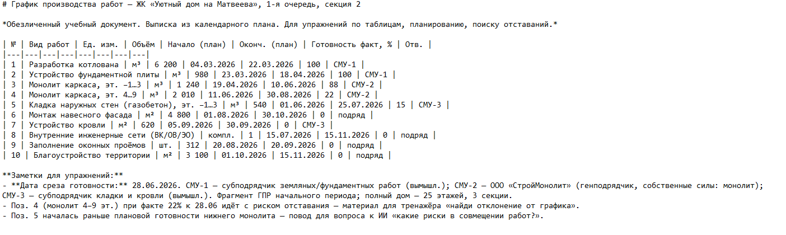

Как делегировать ИИ строительную рутинуЛокальный архив курса
Учимся применять ИИ в повседневной работе · Учимся применять ИИ в повседневной работе
Знакомство с ИИ под строительные задачи
Евгений ЭрманРуководитель Лаборатории ИИ-решений девелоперской компании «РАЗУМ», кандидат технических наук
Тимофей ЛютомскийДиректор по цифровой трансформации девелоперской компании «РАЗУМ»
Один и тот же ИИ иногда выдает гениальный ответ, а иногда — уверенную чушь. У этого есть одно простое объяснение: ИИ не отвечает из базы знаний, а угадывает следующее слово. На этом уроке разберем, как это работает и что из этого следует для стройки.
Почему ИИ иногда гениален, а иногда несет чушь
Вы наверняка уже замечали за ИИ-чатом две разные стороны. Иногда он мгновенно и точно формулирует то, на что у вас ушло бы полчаса. А иногда, с той же уверенной интонацией, выдает то, чего в реальности просто нет: несуществующий пункт СП, придуманную цифру, документ, которого никто не подписывал.
Кажется, что это два разных поведения ИИ. На самом деле это одно и то же поведение, которое выглядит по-разному в зависимости от ситуации. И у него есть одно простое объяснение, которое вы сейчас увидите своими руками: не на словах, а на реальном примере с объекта ЖК «Уютный дом на Матвеева».
💡 Зачем это вам: как только вы поймете механику «почему», вы перестанете слепо доверять гладкому тону ответа — и начнете задавать ИИ более точные вопросы, получая более точные ответы. Это первый и самый важный навык курса.
ИИ — не база знаний, а машина продолжения текста
Языковая модель не хранит внутри себя базу фактов, из которой достает готовые ответы как справочник или поисковик. Она устроена иначе: обучена предсказывать, какое слово с наибольшей вероятностью идет следующим, — и повторяет этот шаг снова и снова, пока не соберет весь ответ.
На каждом шаге у модели есть не одно, а сразу несколько правдоподобных продолжений с разной вероятностью. Она выбирает самое вероятное и движется дальше. Со стороны это выглядит как уверенный, гладкий, грамотный текст. Но гладкость ответа не гарантирует его правильность — модель одинаково уверенно продолжает и то, что знает точно, и то, что додумывает.
Три следствия для строителя:
ИИ нужен контекст. Без ваших документов, объекта и роли модель предсказывает «типичное» продолжение — то, что чаще всего встречалось в текстах. На конкретном объекте типичное не всегда совпадает с фактическим.
Уверенный тон ≠ правда. Модель не «знает, что не знает». Выдуманный пункт норматива и реальный пункт норматива она озвучит одинаково уверенно — проверка фактов остается на вас.
Чем точнее запрос — тем лучше продолжение. Чем конкретнее вы задаете начало, тем точнее вероятности следующих слов совпадают с тем, что вам действительно нужно.
Соберите ответ ИИ сами — слово за словом

Интерактив 1. Соберите ответ ИИ сами — слово за словом
Статическое содержание исходной страницы:
3 · Интерактив
Соберите ответ ИИ сами — слово за словом
Прораб на секции 2 ЖК «Уютный дом на Матвеева» спрашивает ИИ, каким бетоном льют плиту перекрытия (документ 01 кейса — график производства работ). На каждом шаге ИИ видит несколько вероятных продолжений. Кликайте самый вероятный вариант и соберите фразу сами — так, как это делает модель.
На каждом шаге было несколько правдоподобных слов с разной вероятностью — ИИ просто выбирает по ним.
Поэтому ответ всегда звучит гладко и уверенно — даже когда по сути неверен.
ИИ «не знает, что он не знает»: придуманное и реальное он выдаёт одинаково спокойно.
↺ Собрать заново
Проверка ответов и сохранение результата на исходной платформе здесь не подтверждены.
Первый запрос прямо сейчас. Откройте один из чат-ботов ниже и задайте ИИ реальный вопрос по своей работе — например, попросите объяснить рабочий термин, набросать структуру письма или подсказать формулировку. Прочитайте ответ с учётом того, что вы только что узнали: он звучит уверенно — но проверка фактов на вас. Затем вставьте результат в поле.
Вставь сюда свой результат
Я получил ответ на свой запрос
Итоги урока откроются после того, как вы вставите результат и отметите чекбокс.
6 · Самопроверка
Перед сдачей отметьте
Я понимаю: ИИ предсказывает следующее слово, а не ищет ответ в базе знаний.
Я знаю, что уверенный тон ответа не гарантирует его правильность.
Я задал(а) ИИ реальный вопрос по своей работе и прочитал(а) ответ критически.
Я понимаю, зачем на следующих шагах ИИ понадобится роль и контекст.
7 · Финал
Что забрать с этого шага
ИИ-чат — это машина продолжения текста, а не база знаний: он предсказывает следующее слово по вероятности.
Гладкий и уверенный тон ответа ничего не говорит о его достоверности — додуманное и реальное звучат одинаково.
Чем точнее вы задаёте контекст и вопрос, тем точнее продолжение — этому посвящены следующие шаги курса.
Что получилось — вставьте свой первый запрос и ответ ИИ ещё раз, если хотите сохранить в задании куратору
Ваш e-mail для ответа куратора
⬇ Скачать моё задание .txt
Проверка ответов и сохранение результата на исходной платформе здесь не подтверждены.